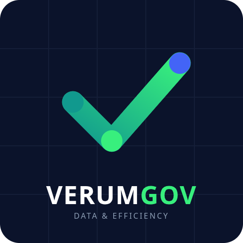

VERUMGOVA VerumGov cria painéis inteligentes e open-source para ajudar gestores públicos a visualizar a correta aplicação de recursos, gerar economia e comunicar entregas com transparência total ao cidadão.
Conheça os ProjetosDashboards públicos e didáticos mostrando o fluxo exato de repasses federais (ex: Saúde e Educação) para o município. Mostre ao cidadão onde o recurso chegou e como foi aplicado.
Cruzamento inteligente de dados com o Banco de Preços em Saúde (BPS). Identificamos e destacamos pregoeiros e gestões que geram maior economia aos cofres públicos através de compras assertivas.
Mapeamento visual de obras e serviços. Transformamos planilhas opacas em mapas interativos, provando que o investimento público está retornando em qualidade de vida para a sociedade.